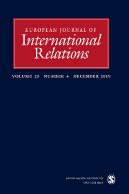
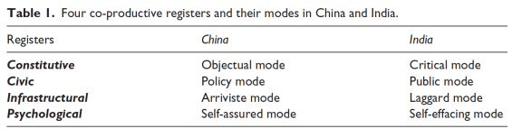

收录于合集
 简 介
简 介
** 【作者】** Peter Marcus Kristensen是哥本哈根大学政治学副教授。他的主要研究领域是国际关系理论，国际关系社会学，新兴大国和非西方国际关系视角。电子邮箱：pmk@ifs.ku.dk
** **【 编译 】****杨洋
** **【 校对 】****曹鹏鹏
** **【 审核 】****金磊
** 【来源】** Kristensen, Peter Marcus. “States of emergence, states of knowledge: A comparative sociology of international relations in China and India.” European Journal of International Relations (2019): 1354066119829804.
** 【期刊】** European Journal of International Relations,欧洲国际关系杂志（EJIR）是欧洲政治研究联盟国际关系常设小组（the Standing Group on International Relations of the European Consortium for Political Research, SGIR）的同行评审旗舰期刊, 由SGIR和欧洲国际研究协会组成的联合委员会共同管理，旨在于国际关系领域发表同行评审的学术贡献，从尖端的理论辩论到当代和历史层面的主题，再到国际关系学者和实践者。2019年该刊影响因子为2.756。

新兴状态，知识性状态： 中印国际关系的比较社会学探析
States of Emergence, States of Knowledge: A Comparative Sociology of International Relations in China and India
Peter Marcus Kristensen
**
**
内容提要
本文探讨了国际关系中新兴国家的地缘政治崛起与国际关系中知识生产之间的关系，利用科学研究文献中关于科学和政治的“共同生产”,概念化和分析“新兴状态”和“知识性状态”之间的关系。 **作者认为， “新兴状态”不仅应该被概念化为科学之外的现实世界条件，这种科学强加于其他纯粹的内部“知识性状态”，还应该作为一种学术敏感性、精神和动机以发挥作用。**本文通过采访中国和印度的国际关系学者，了解他们自己如何理解新兴条件，审视自己在其中的地位和行为，从而以民族方法论展开论述。根据访谈，作者确定了 四个共生指标（构成、公民、基础设施和心理） ，将新兴状态与知识性状态联系起来，探析中国和印度的学者在落实这些指标方面所采取的不同行为。
文章导读
几十年来对国际关系的社会学研究将国际关系学科描述为“不那么国际化”，而是“霸权主义”，并由美国和“西方”主导。这个领域具有极高的不对称性，美国及欧洲国家仍然是产出思想尤其是理论的主力，从边缘到核心的思想流向几乎不可能。因此，近年来为“边缘”，“南部国家”和“非西方”开放的奖学金力度越来越大，以便实现“去中心化”，使国际关系更“全球化”。
本文的目标是在理论上和经验上探讨 “上升”的社会政治条件与尝试创设国际关系理论之间的关系。
新兴状态和知识性状态间关系的理论化分析
权力与知识之间的关系是后实证主义和反思性国际关系中的一个关键主题，其中包括：主要的知识和主导的国际政治实践是如何相互建构的；如何使认知论不仅描述世界政治，而且构成、复制和合法化世界政治。本文研究特定的世界——位于“上升”或“新兴”以及新兴状态和知识性状态之间同样特定的权力——知识联系。
作者比较研究了新兴状态和知识状态之间的关系，同时系统地比较了新兴能力中的国际关系和经历“上升”的潜在差异。作者选择中国和印度作为案例有两个原因。 **首先，就新兴状况而言，它们是新兴大国中规模最大， “最新兴”的国家。**中国和印度经历了持续的经济增长，贸易和投资扩张，政治影响力日益增强，在全球经济体、人口、劳动力和军费开支大国等方面已经跻身世界五强。然而，新兴状态不仅是经济/军事增长或扩大外交政策的客观状态，而且是对未来世界政治身份充满渴望和争论的国内状态。在这方面，中国和印度都具有潜力。
其次，就知识状况而言，现有研究表明，如何在中国和印度发展 “本土”的国际关系理论存在争议。 中国学者质疑中国的崛起是否会导致中国国际关系理论的建构，并讨论如何建立“中国的国际关系学派”。印度的学者们已经发出了类似的呼吁，要求印度成为一个知识性大国，尽管这些呼吁更多的是源于“后西方”而不是“印度”理论。
作者根据目标性抽样选择受访者，这种抽样旨在实现包容性和多样性，以捕捉受访区域的异质性，包括了来自纵向（等级、声誉、备份）和横向要素（城市、机构、学校、范式）的学者。
• 构成指标 ：新兴的权力，对象和观点（The constitutive register:Emerging powers, objects and perspectives）
构成指标中的联合制作涉及认知对象的构成。 它指的是使国际现象变得可知的“客体实践”，通过将它们转化为类似的物体，从而可以控制。
• 公民指标 ：新兴权力，问题和义务（The civic register:Emergingpowers, problems and obligations）
公民指标中的联合制作围绕学术责任，社会和政治相关性以及政策和公众参与的概念展开。
• 基础设施 指标：新兴资源，机构和学科（Infrastructural register: Emerging resources, institutions and disciplines）
基础设施指标中的合作产生的论点从新兴状态出发，通过塑造组织和学科配置，将经济增长和对外开放的条件作为一种物质—制度路径。
• 心理指标 ：新兴力量，注意力和信心（The psychological register:Emerging powers, attention and confidence）
在心理指标中，新兴状态通过增强新兴大国对国际关系学者的关注，认可和信心来影响知识状态。 对未来权力的期望引起了国际社会越来越多的关注新兴大国的想法。

**比较分析
**
总体而言，中国的国际关系嵌入了比印度国际关系程度更大的新兴状态。大多数受访的中国学者将新兴的状态视为事实，并就其如何影响知识状态进行推测，还强烈呼吁将世界，全球和国际秩序作为认识的对象；而印度学者首先对新兴的状态持怀疑态度，倾向于将“印度崛起” 作为一种精英主义话语。一种可能的解释是，中国的崛起状态客观上“更先进”，因为中国的经济、贸易和军事支出约为印度的4倍，外国投资几乎是其9倍，官方发展援助几乎是其25倍。中国拥有更大的全球经济、政治和军事存在，这在一定程度上解释了为什么中国学者在构成指标中更关注“崛起”和全球背景。如表1所示，构成性指标为外交政策方面进一步全球化的取向与知识生产方面更为全球化、系统性和理论化的取向建立了联系。在公民指标中，中国受访者强烈认为，新兴状态导致对国际关系专业知识的需求不断增长，并以政策模式构想公民精神，以践行为政府解决中国和平崛起问题提供建议的义务。 在心理指标方面，中印两国都有一种普遍的看法，拥有悠久的文明历史和哲学传统的崛起国，若没有自己的国际关系理论，将与其地位不相称。在基础设施指标方面，中国在社会科学和人文方面的支出约为印度的四倍，其人员约为印度的25倍，这部分解释了基础设施指标的差异。然而，这些解释暗示中国只是暂时“领先”。作者更倾向认为他们的新兴状态及其与知识状态的关系在本质上而非仅在程度上不同。
** ** 结 论****
**本文探讨了 “上升”（新兴状态）的社会政治条件与理论（知识状态）的尝试之间的关系。**这种关系在国际关系的社会学中被提及但很少被研究。本文不是将上升的政治条件分析为影响（或不影响）科学的其他纯粹和“内部”动力的因果和“外部”因素，而是表明，新兴状态表现为“内在”科学作为一种学者用它来理解自己位置的识别能力。学者用它来理解自己的位置。学者在知识与权力，科学与政治，崛起与理论之间建立的联想既不是内在的，也不是外在的，既不是纯粹的科学，也不是纯粹的政治，而是共同生产的。 该文章确定了四个 指标，通过这些指标对上升与理论之间的共同关联性进行了探究。四个指标中以各种方式作出的联想表明，这些联系会证明新兴国家的崛起会成为理论动力的假设。 “理论权力论” (theorising powers thesis) 可以通过其反思效应发挥作用。
中国的学者非常赞同下述观点，即外交政策中更加全球化的方向有助于国际关系中更系统和理论的认识取向。在公民指标中，无论决策者或新兴大国的民间社会是否真的需要创生本土的国际关系理论，学者们必须建立新的国际关系理论这样一种公民识别力本身可以作为理论的推动力。在基础设施指标中，物质意识、制度和纪律的到来本身可以为中国学派项目提供动力，而对印度国际关系的过度悲观状态则具有相反的效果。最后，心理记录中的论证清楚地说明了新兴状态不仅影响理论的客观、外在和物质条件，而且影响了未来重要性的主体间感。在这里，学者们的理念是，他们国家的崛起力量应该转化为创新的观点，表明“我们的时代已经到来”、“我们可以在理论上思考”，并通过错误认知和自卑感与“西方”相对立。这种敏感性本身就解释了为什么新兴大国在不断努力构建国际关系理论。 总而言之，这种努力是卓有成效的，因为学者们认为崛起的大国应该成为具有理论化能力的大国。
作者的比较设计不可避免地强调了中国和印度之间的差异，但重要的是强调两者之间也存在的相似之处及相似之处之间的差异。此外，还存在互动效应，因为印度对国际关系国家的失望往往是针对中国的，而反对一个单一的国家学派的论据往往与专制民族主义的中国及其中国学派形成鲜明对比。然而，比较维度很重要，因为来自中国和印度的理论类型可能会有所不同，这取决于它们与新兴状态的关联程度，以及它们如何通过四个指标进行特定诠释。这些努力的结果是否会被“全球”学科认定为“国际关系理论”，还是一个需要进一步研究的问题。
_ ** _ ** _ ** _ 本文由国政学人独家编译推荐**__
扫下方二维码查看往期精彩
【新刊速递】第01期 | Review of International Studies Vol.45, No.4, 2019

▲分类导览 1
▼分类导览2